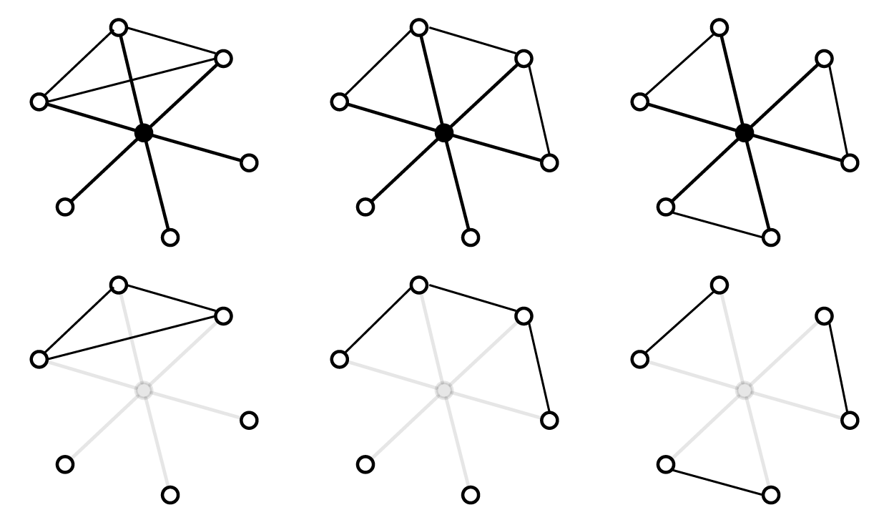
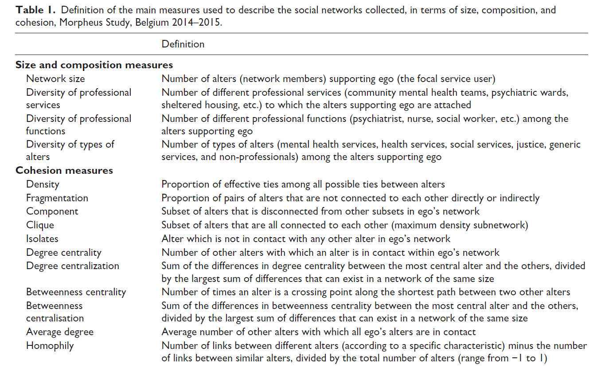

10 Analyser des réseaux personnels
Je ne suis pas un praticien de l’analyse de réseau personnel au sens strict, j’ai parfois extrait des réseaux personnels de réseaux complets pour caractériser les sommets. Ce chapitre s’inspire de manuels récents (Crossley et al. (2015), Perry et al. (2018), McCarty et al. (2019)). Les aspects liés à la visualisation et aux logiciels sont traités dans les chapitres correspondants.
Un réseau personnel (ego-network, personal network) désigne un réseau constitué d’ego, ses voisins d’ordre 1 (alters) et les liens entre ces voisins 1. Une analyse de réseaux personnels suppose le recueil d’une collection de réseaux personnels dans un échantillon de population donnée ou la transformation d’un réseau complet en \(V\) réseaux personnels, \(V\) étant l’ordre du réseau. Plusieurs stratégies d’analyse complémentaires sont possibles et ce chapitre ne prétend nullement à l’exhaustivité. Je m’intéresse d’abord aux analyses possibles sur un réseau personnel avant de décrire celles comparant différents réseaux personnels.
10.1 Analyser un réseau personnel
Certaines mesures présentent peu d’intérêt pour analyser un réseau personnel. Par construction, le diamètre varie entre 1 (tous les alters sont connectés entre eux) et 2 (cas le plus fréquent) et le réseau est obligatoirement connexe. Ego est dans l’immense majorité des cas le sommet le plus central et ce quel que soit l’indicateur de centralité choisi 2. La mesure du degré a peu d’intérêt pour ego : dans un réseau personnel de \(V\) sommets, il est nécessairement égal à \(V - 1\). La distribution des degrés des alters peut présenter un intérêt, le degré étant susceptible de varier entre 1 et \(V - 1\).
Il est par contre intéressant de supprimer ego puis de mesurer le réseau ainsi modifié à l’aide des indicateurs usuels vus au chapitre 5 (nombre d’isolés, de composantes, densité, diamètre, transitivité, etc.). La figure 10.1 montre trois réseaux personnels de même ordre (7 sommets) et de même taille (9 liens). Par définition, ego est connecté à tous ses alters : garder ces liens n’apporte non seulement aucune information utile mais masque des différences structurelles notables. Une fois ego supprimé, ces dernières apparaissent clairement. Certaines valeurs restent les mêmes (densité, degré moyen) mais le nombre de triades fermés et d’isolé(s) varient. Les mesures étant différentes d’un égo réseau à l’autre, cela peut donner des pistes pour l’interprétation thématique.
Plusieurs indicateurs ont été proposés spécifiquement pour l’étude des réseaux personnels. Il est possible par exemple d’évaluer la fragmentation du réseau personnel une fois supprimé ego en calculant l’indicateur suivant :
\[ \frac{(C - 1)}{(N - 1)} \]
où \(C\) est le nombre de composantes et \(N\) le nombre d’alters. L’indice varie entre 0 (les alters forment une composante connexe) et 1 (tous les alters sont isolés). L’indicateur ne permet pas une différenciation fine : un réseau avec un isolé d’un côté et une composante connexe de l’autre obtient le même score qu’un réseau formé de deux composantes de taille égale (cf figure 10.1).

Un ego-réseau est nécessairement connexe, son diamètre ne dépasse jamais 2 et ego est très souvent le sommet le plus central, quelle que soit la mesure de centralité choisie. Le calcul d’indicateurs avant et après la suppression d’ego est susceptible de révéler des configurations plus intéressantes. Certains indicateurs ne permettent pas d’identifier des structures différentes : la fragmentation du réseau est la même pour les deux réseaux en bas à droite (1/3).
Burt a proposé plusieurs indicateurs pour mettre en évidence les propriétés des réseaux personnels. Dans une logique utilitariste des liens sociaux, le fait de connaître deux personnes qui se connaissent a peu d’intérêt pour ego car elles risquent de lui apporter la même information. Par ailleurs, plus les alters se connaissent, plus iels sont susceptibles d’exercer une forte pression sociale sur ego.
La taille effective (effective size) est égale au degré d’ego (\(V - 1\)) 3 moins la moyenne des degrés des alters, liens avec ego non pris en compte. Si le réseau est en étoile (aucun lien entre alters), la taille effective est égale au degré d’égo (\(V-1\)). Si le réseau personnel est complet, la taille effective est égale à 0 : le degré d’ego est par définition \(V - 1\), le degré de chaque alter aussi. Plus la taille effective s’approche de 0, plus le réseau personnel d’ego est dense.
L’efficacité (efficiency) est égale à la taille effective divisée par le nombre d’alters, ce qui permet de normaliser la mesure précédente. Si l’efficacité de mon réseau est égale à 0 (réseau complet), cela signifie que tous les alters apportent la même information ; si elle est égale à 1 (réseau en étoile), chaque alter est susceptible d’apporter une information différente. Burt a également proposé une mesure de redondance égale à \(2T/N\) où \(T\) est le nombre de liens non adjacents à ego et \(N\) le nombre d’alters. Elle varie entre 0 (réseau en étoile) et \(N - 1\) (réseau complet) ; plus elle est élevée, plus le réseau personnel contient des liens “redondants”.
Burt a proposé d’autres indicateurs qui sont évoqués dans les manuels cités plus hauts. Peu compliqués à calculer, ils supposent pour être interprétés certains types de liens entre certains types de personnes. Pour se limiter à des relations en partie instrumentales, un niveau minimum de redondance est utile dans les relations professionnelles, par exemple pour s’assurer de la fiabilité d’une partenaire potentielle. Si on travaille sur des liens personnels autres (liens familiaux par exemple), d’autres indicateurs sont peut-être plus utiles. Enfin, quand les sommets ne sont pas des personnes, il peut être difficile de supposer une signification stratégique aux liens étudiés.
Si les indicateurs de Burt sont spécifiques à certains types de relations, il explique des indicateurs plus généralistes permettant de mettre en évidence le niveau d’homogénéité ou d’hétérogénéité du réseau et le niveau d’homophilie des liens 4.
Si la variable attributaire considérée est qualitative, plusieurs dizaines d’indicateurs sont disponibles pour la mesurer 5. Un indicateur fréquemment utilisé est l’indice de diversité d’Agresti (voir l’annexe pour l’équation). Il varie entre 0 (tous les alters appartiennent à la même catégorie) et 1 (les alters sont distribués de manière homogène entre les différentes catégories). Un indice proche est l’indice de Blau (également appelé indice d’Herfindahl, d’Hirschman ou D de Simpson) qui s’interprète de la même manière.
Si la variable attributaire des alters est ordinale (classes d’âge par exemple), la médiane peut être utilisés. Si elle est continue (âge par exemple), calculer les paramètres statistiques de centralité et de dispersion peut fournir des informations utiles : plus l’écart-type est élevé, plus l’hétérogénéité est forte.
10.2 Comparer les réseaux personnels
Le petit échantillon de mesures listées à l’instant portait sur un réseau personnel. Les analyses sont évidemment faites sur les réseaux personnels de l’ensemble des individus enquêtés. Étudier la variation des indicateurs en fonction des individus est une démarche nécessaire ; utiliser ces indicateurs dans le cadre d’une analyse multivariée pour créer des catégories d’individus est une démarche fréquente.
Exemple 1 : dans l’ouvrage déjà évoqué de Bidart et al. (2011), l’utilisation de 7 indicateurs (taille, densité, centralité de proximité, d’intermédiarité, nombre de triades fermées, nombre de composantes et nombre d’isolés) sur l’ensemble des réseaux personnels du panel de Caen et d’une enquête toulousaine permet de construire une typologie en quatre classes : les réseaux denses, centrés (sur ego), dissociés (souvent entre composantes familiale, amicale et professionnelle) et composites (structures complexes combinant des éléments hétérogènes).
Exemple 2 : l’étude des réseaux personnels d’usagers de soins psychiatriques menée par Wyngaerden et al. (2020) a permis de collecter des données concernant 390 personnes. Une fois les indicateurs calculés (figure 10.2), une analyse de la variance est menée à l’aide de quatre variables susceptibles d’impacter la structure du réseau (statut résidentiel, niveau d’éducation, sévérité du diagnostic et durée de l’histoire psychiatrique). Ces quatre variables ont ensuite été utilisées comme variables explicatives dans des régressions linéaires visant à expliquer la densité, le nombre de composantes et la centralisation de degré.

Extrait de l’article de Wyngaerden et al. (2020).
On pourrait tout à fait imaginer des protocoles de recueil de données visant à récolter les voisins d’ordre 2 ou 3 (situés à des plus courts chemins de longueur 2 ou 3). Un tel recueil serait évidemment très coûteux avec des dispositifs type enquête + entretiens mais le serait peu avec des données nativement numériques.↩︎
Là encore, ce n’est pas vrai pour un réseau où tous les alters sont connectés entre eux mais il s’agit d’un cas rare.↩︎
Les formules indiquées ici sont celles modifiées par Borgatti pour les adapter à des réseaux personnels non valués. La formule de la taille effective est parfois indiquée comme étant le nombre de sommets moins la moyenne des degrés des alters, liens avec ego non pris en compte. Dans ce cas, le minimum est égal à 1.↩︎
Certaines autrices distinguent l’homophilie (liens ego-alters) de l’homogénéité (liens entre alters). Une femme qui n’aurait que des amis hommes aurait un réseau personnel hétérophile et homogène; une femme qui n’aurait que des amies femmes aurait un réseau personnel homophile et homogène.↩︎
Non, je n’exagère pas : voir la page Qualitative variation sur Wikipedia.↩︎